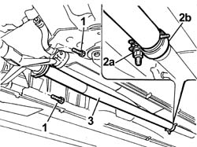

1076B18 rigid section of exhaust pipe between catalytic converter and silencer - r + r
- Path
- Procedures > 10 ENGINE > 1076 EXHAUST PIPES AND SILENCERS > 1076B EXHAUST PIPES AND SILENCERS > 1076B18 rigid section of exhaust pipe between catalytic converter and silencer - r + r
- Kind
- repair procedure (removal / refitting; the operation number is the code)
- Applies to
- engines: 2.4 20V; all production periods
- Interactive page
- https://sloeber94.github.io/elrnDB-lThss/en/#/75128
Applies to: engines: 2.4 20V; all production periods
 Removing
Removing
 Refitting
Refitting- Position the vehicle on a lift.
1. Undo the bolts fixing the rigid section to the front section of the exhaust pipe.
2. Undo the bolt (2a) fixing the metal collar (2b) connected to the rear silencers.
3. Release and remove the rigid section of the exhaust pipe.

Applies to: engines: 2.4 20V; all production periods
Refitting
Removing- Join the rear silencers to the exhaust pipe using the metal band.
- Tighten the bolt fixing the metal collar.
 | Value - daNm | Fastening | Component | Ø |
|---|---|---|---|---|
. | 4.5 | - | REAR SILENCER EXHAUST | M10X1.25 |
- Position the gasket.
- Tighten the bolts fixing the rigid section to the centre section of the exhaust pipe.
- Remove the vehicle from the lift.